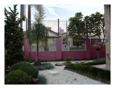

Physis Paisagismo e Jardinagem
A Physis Paisagismo vem continuamente aperfeiçoando seus serviços, com profissionais cada vez mais qualificados, aprimorando suas técnicas no setor de paisagismo, jardinagem e reflorestamento, através das experiências adquiridas no Instituto de Botânica (IBT – SP) e cursos realizados no Instituto Brasileiro de Paisagismo (IBRAP), com foco em resultados Ecologicamente Corretos:
Paisagismo – novas técnicas para elaboração de projetos e suas execuções;
Jardinagem – novos produtos a oferecer, como cachepos de madeira reaproveitada (demolição, cruzeta, dormente e eucalipto), vasos ecológicos da Linha Lumini e reaproveitamento das primeiras camadas de terras e deck ecológicos;
Manutenção – equipes especializadas pelo IBT – SP, que executam serviços de forma mais limpa e bem detalhista;
Reflorestamento – equipe constituída por biólogos certificados pelo IBT – SP e pelo IBAMA para Elaboração e Execução de Laudos Ambientais, Compensação Ambiental IBAMA e Prefeituras e Órgãos Estaduais.
Topo /\
|